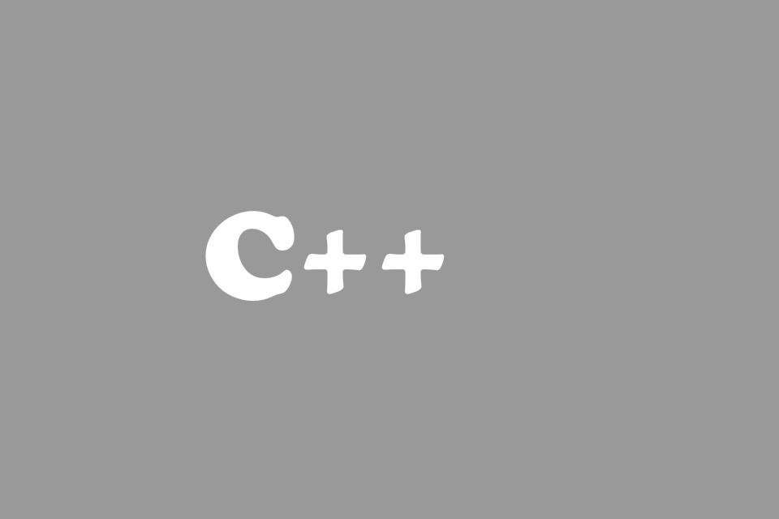
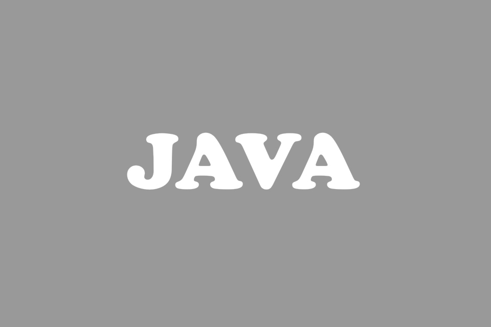
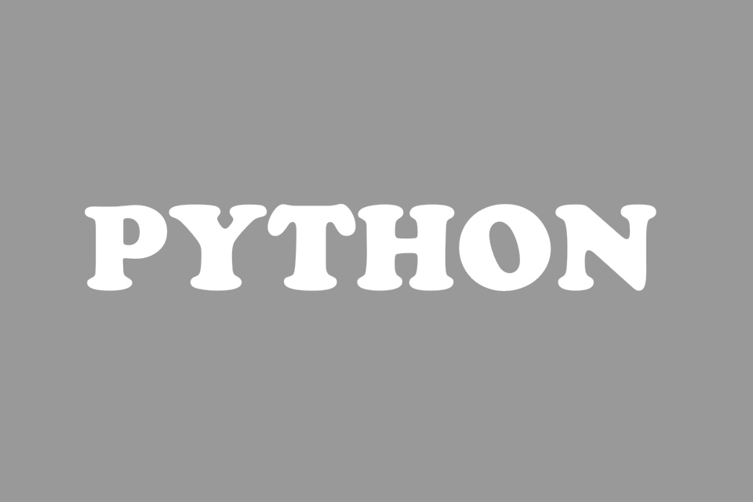

NOTAS EN PROCESO

JSON
Notas básicas sobre lo que es JSON y en qué se utiliza, su estructura y los daos generales.
Ir a NotasPHP
Notas básicas sobre PHP conexiones con bases de datos y en general la creación de funciones y aspectos generales.
Ir a Notas

C++
Notas básicas sobre la creación de bases de datos, consultas y manejo de datos con MySQL
Ir a Notas

JAVA
Notas básicas sobre la creación de bases de datos, consultas y manejo de datos con MySQL
Ir a Notas

PYTHON
Notas básicas sobre la creación de bases de datos, consultas y manejo de datos con MySQL
Ir a Notas